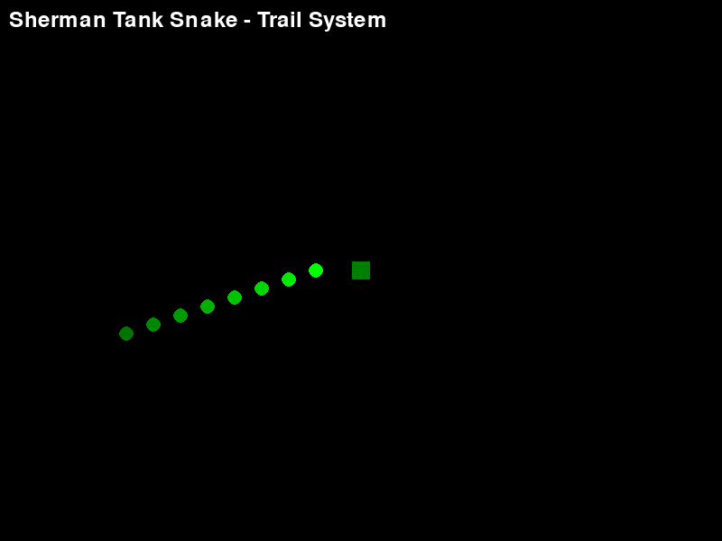
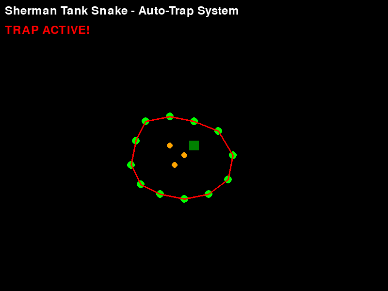
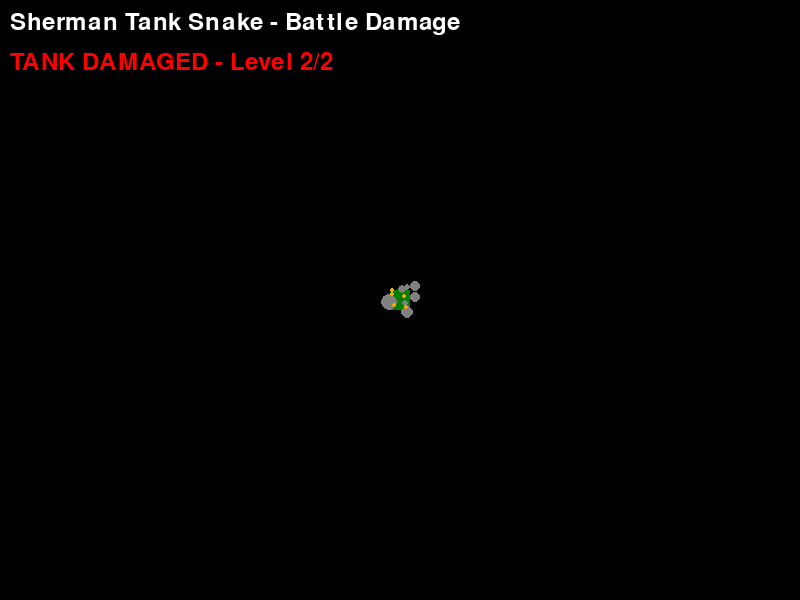
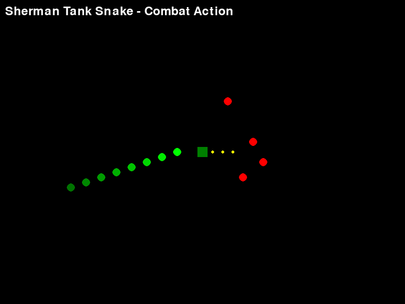

AI-Assisted Retro Game Development Journey
A unique hybrid combining WWII tank combat with classic Snake mechanics
Discover how I built this unique game using AI as my development partner. Learn about effective prompting techniques, development automation, and the creative process.
 Read Full StoryExperience Sherman Tank Snake yourself! Control a WWII Sherman tank, leave strategic trails, and trap enemies with the innovative auto-trap system.
 Download GameExplore the complete source code, see AI-generated solutions, and understand the technical implementation behind the game mechanics.
 GitHub RepositoryDetailed code examples, AI-generated algorithms, and technical explanations for developers interested in the implementation details.
 Technical DetailsAuthentic Sherman tank movement with momentum and rotation
Snake-like trail that fades over time for tactical planning
Intelligent system that automatically traps encircled enemies
Battle damage affects tank performance and visual effects
Built with AI as a development partner for faster, better code
Enemies avoid trails and pursue the tank intelligently